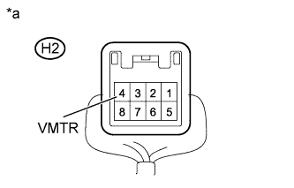
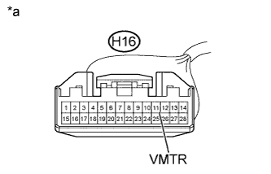

REAR SEAT ENTERTAINMENT SYSTEM > Visual Mute Signal Circuit between Navigation ECU and Multi-display Controller |
| 1.CHECK DISPLAY AND NAVIGATION MODULE DISPLAY |
|  |
Measure the voltage according to the value(s) in the table below.
| Tester Connection | Condition | Specified Condition |
| H2-4 (VMTR) - Body ground | RSE playing → Source changed | Higher than 3.5 V → Below 1 V |
| *a | Component with harness connected (Display and Navigation Module Display) |
|
| ||||
| OK | ||
| ||
| 2.CHECK HARNESS AND CONNECTOR (DISPLAY AND NAVIGATION MODULE DISPLAY - MULTI-DISPLAY CONTROLLER) |
Disconnect the H2 display and navigation module display connector.
Disconnect the H16 multi-display controller sub-assembly connector.
Measure the resistance according to the value(s) in the table below.
| Tester Connection | Condition | Specified Condition |
| H2-4 (VMTR) - H16-11 (VMTR) | Always | Below 1 Ω |
| H2-4 (VMTR) - Body ground | Always | 10 kΩ or higher |
|
| ||||
| OK | |
| 3.CHECK DISPLAY AND NAVIGATION MODULE DISPLAY |
|  |
Measure the voltage according to the value(s) in the table below.
| Tester Connection | Condition | Specified Condition |
| H16-11 (VMTR) - Body ground | RSE playing → Source changed | Higher than 3.5 V → Below 1 V |
| *a | Front view of wire harness connector (to Multi-display Controller Sub-assembly) |
|
| ||||
| OK | ||
| ||